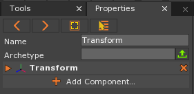
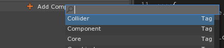
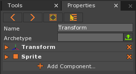

Add a Component
Basics of how to add a component.
- Select the Object to which you want to add the component

Your object should be displayed when selected
- In the Properties Window
- Click the button
This brings up the Add Component drop down:

- Start typing the name of the component you want to add:

Notice that component options appear in the drop down selection
- Click on desired component to add it to the object
In the Properties Window, we can see that component successfully added:

| orphan: |
|---|